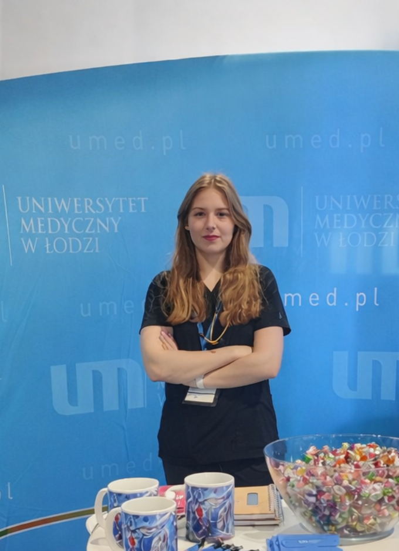

barczuk.pl · celllab.eu
Julia Barczuk
Young scientist focused on neuroinflammation, neurodegeneration, and cellular mechanisms relevant to Alzheimer’s disease and translational biomedical research.
This website is designed as a concise, credible, and visually refined scientific profile — a place where publications, research interests, academic activity, and opportunities for collaboration are presented with clarity.

Academic event portrait — cropped from the supplied UMED photo.
About
A modern scientific profile with a clear academic focus
Julia Barczuk develops her research path within biomedical science, with a strong focus on neuroinflammation, neurodegeneration, and molecular mechanisms involved in Alzheimer’s disease and related disorders. She is affiliated not only with the Medical University of Lodz, but also with the Laboratory of Molecular Neuroscience, German Center for Neurodegenerative Diseases (DZNE), Berlin, Germany.
The site is intended to function as both a personal academic portfolio and a reliable public source for researchers, institutions, students, and potential collaborators looking for verified information about her scientific work.
The overall direction is intentionally clean and international in tone: precise enough for the scientific community, yet accessible to broader audiences who want to understand Julia’s research profile and achievements.
Positioning
One website, two domains
barczuk.pl serves as the primary personal domain, while celllab.eu reinforces the scientific and international context of the project.
- Single repository on GitHub
- Single deployment in Azure Static Web Apps
- Unified visual identity for both domains
- Structured for future bilingual expansion
Research themes
Key scientific areas
The research framing below is written to be strong and professional without overstating claims. It can be refined further once additional institutional or project descriptions are available.
Neuroinflammation
Work centered on inflammatory mechanisms in the nervous system, with particular attention to microglial activation and inflammatory phenotype modulation.
Neurodegeneration
Research connected to Alzheimer’s disease and broader neurodegenerative pathology, linking molecular events with disease progression and therapeutic relevance.
Cell and laboratory research
In vitro and molecular approaches supporting mechanistic biomedical research, including experimental models relevant to cellular stress, apoptosis, and signaling pathways.
Publications
Selected publications
2025
It must have been network (percolation for the synaptic function)
Perspective-style publication indexed in PubMed, representing the most recent item currently visible in the search results associated with Julia Barczuk.
2024
Noradrenaline Protects Human Microglial Cells (HMC3) Against Apoptosis and DNA Damage Induced by LPS and Aβ 1-42 Aggregates In Vitro
A publication closely aligned with Julia Barczuk’s core research direction, combining neuroinflammation, microglia, and experimental in vitro investigation.
2024
Potential Mechanisms of Tunneling Nanotube Formation and Their Role in Pathology Spread in Alzheimer's Disease and Other Proteinopathies
Review-oriented work linking neurodegenerative disease mechanisms with intercellular communication pathways relevant to pathology propagation.
2023
PI3K/Akt/mTOR Signaling Pathway in Blood Malignancies — New Therapeutic Possibilities
Review article showing broader engagement with signaling pathways and translational biomedical topics beyond neurodegeneration alone.
2022
Targeting NLRP3-Mediated Neuroinflammation in Alzheimer's Disease Treatment
An important earlier publication that clearly anchors Julia Barczuk’s profile in Alzheimer’s disease and inflammation-related therapeutic perspectives.

Academic activity
The UMED event photo works well here
Since you like the UMED booth, the supplied image is used prominently in the academic activity section. It shows visibility, institutional presence, and engagement beyond the publication list.
This section is an ideal place for future additions such as conference participation, science communication, poster sessions, oral presentations, and involvement in university initiatives.
Profiles and visibility
Scientific links
These links turn the page into a practical academic hub rather than only a presentation page.
Contact
Contact for academic matters and collaboration
For research-related contact, academic collaboration, speaking opportunities, or institutional communication, please use the address below.
Name
Julia Barczuk
Affiliation
Medical University of Lodz
Laboratory of Molecular Neuroscience, German Center for Neurodegenerative Diseases (DZNE), Berlin, Germany
Laboratory of Molecular Neuroscience, German Center for Neurodegenerative Diseases (DZNE), Berlin, Germany
Unit
Department of Clinical Chemistry and Biochemistry
Additional affiliation: Laboratory of Molecular Neuroscience, DZNE Berlin
Additional affiliation: Laboratory of Molecular Neuroscience, DZNE Berlin
Email
julia@celllab.eu